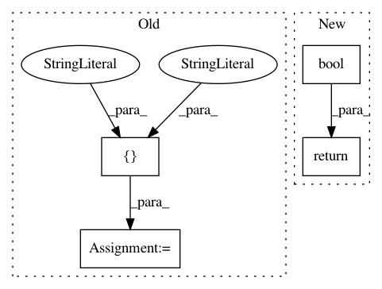

f0be29988d637f2d40616e4f857648f87bc77451,reframe/core/schedulers/slurm.py,SlurmNode,is_down,#SlurmNode#,437
Before Change
def is_down(self):
return any(
self.in_state(s) for s in ["DOWN", "DRAIN", "MAINT", "NO_RESPOND"])
def in_state(self, state):
return state in self._state
After Change
return self._states == {"IDLE"}
def is_down(self):
return bool({"DOWN", "DRAIN", "MAINT", "NO_RESPOND"} & self._states)
def in_state(self, state):
return state in self._states
In pattern: SUPERPATTERN
Frequency: 3
Non-data size: 4
Instances
Project Name: eth-cscs/reframe
Commit Name: f0be29988d637f2d40616e4f857648f87bc77451
Time: 2018-11-27
Author: manitaras@cscs.ch
File Name: reframe/core/schedulers/slurm.py
Class Name: SlurmNode
Method Name: is_down
Project Name: GoogleCloudPlatform/PerfKitBenchmarker
Commit Name: 870e3915cf44ee8923bac2fb7b49bc7d7832209c
Time: 2019-07-18
Author: chriswilkes@google.com
File Name: perfkitbenchmarker/providers/aws/aws_network.py
Class Name: AwsSubnet
Method Name: _Exists
Project Name: GoogleCloudPlatform/PerfKitBenchmarker
Commit Name: 870e3915cf44ee8923bac2fb7b49bc7d7832209c
Time: 2019-07-18
Author: chriswilkes@google.com
File Name: perfkitbenchmarker/providers/aws/aws_network.py
Class Name: AwsInternetGateway
Method Name: _Exists